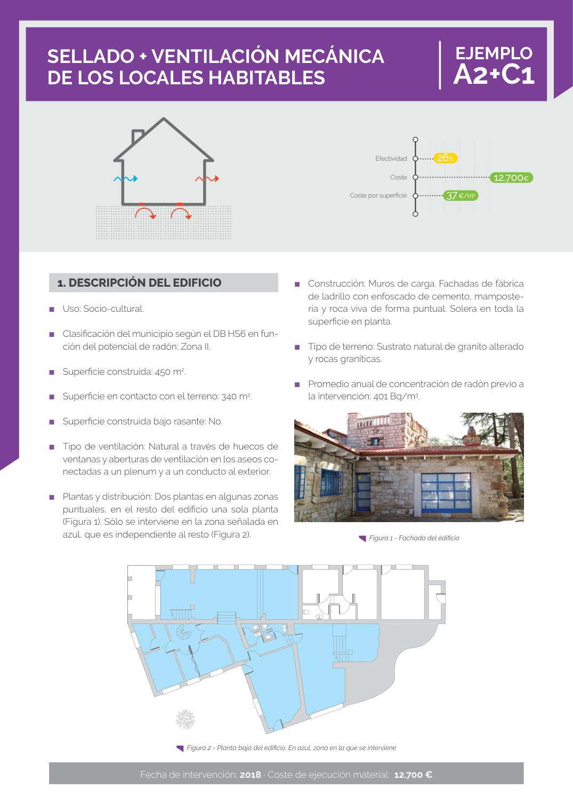

GUIA · Página 78 · versión sin-fecha
SHA256: e58e54b822cf4ab00e258f0eb50c0f06a8c04e3730a7f530d224485e2a5bb02e · página física 78 de 82 · métodos de encabezado
solo si están cotejados.
Formatos: Markdown · JSON de bloques · PDF p. 78 · imagen PNG
Página gráfica: el texto extraído puede ser parcial. Prevalece la imagen/PDF; depende de ellos.
Fecha de intervención: 2018 · Coste de ejecución material: 12.700 € SELLADO + VENTILACIÓN MECÁNICA DE LOS LOCALES HABITABLES ■ Construcción: Muros de carga. Fachadas de fábrica de ladrillo con enfoscado de cemento, mamposte ría y roca viva de forma puntual. Solera en toda la superficie en planta. ■ Tipo de terreno: Sustrato natural de granito alterado y rocas graníticas. ■ Promedio anual de concentración de radón previo a la intervención: 401 Bq/m3. 1. DESCRIPCIÓN DEL EDIFICIO ■ Uso: Socio-cultural. ■ Clasificación del municipio según el DB HS6 en fun ción del potencial de radón: Zona II. ■ Superficie construida: 450 m2. ■ Superficie en contacto con el terreno: 340 m2. ■ Superficie construida bajo rasante: No. ■ Tipo de ventilación: Natural a través de huecos de ventanas y aberturas de ventilación en los aseos co nectadas a un plenum y a un conducto al exterior. ■ Plantas y distribución: Dos plantas en algunas zonas puntuales, en el resto del edificio una sola planta (Figura 1). Sólo se interviene en la zona señalada en azul, que es independiente al resto (Figura 2). EJEMPLO A2+C1 Figura 2 - Planta baja del edificio. En azul, zona en la que se interviene Figura 1 - Fachada del edificio Efectividad Coste Coste por superficie 26% 12.700€ 37 €/m2
